Nociones básicas para estudiar las estrellas
La clase inaugural del curso (prof. Andrea Mejías) instala el terreno de juego: qué tipo de ciencia es la astronomía, con qué "mensajeros" aprendemos del Universo, por qué las potencias de 10 y los logaritmos son el idioma obligatorio del oficio, y por qué el estudio de las estrellas parte por el Sol — presentado aquí como un catálogo de números extremos: distancia, tamaño, masa, densidad, composición, temperatura, luminosidad y movimiento.
La astronomía es una ciencia rara: no podemos meter una estrella en un laboratorio, ni repetir el experimento, ni girar la perilla de la masa para ver qué pasa. Los "experimentos" ocurren solos, allá afuera, y a nosotros solo nos llega información — casi toda en forma de luz. Para alguien con formación de ingeniería, esta primera clase se lee como el documento de especificaciones del curso: define el método (observación + estadística + modelos + tecnología), los canales de entrada (el espectro electromagnético y otros mensajeros), las herramientas numéricas (notación científica y logaritmos, porque las cantidades abarcan decenas de órdenes de magnitud) y el primer caso de estudio: el Sol, la única estrella que tenemos al lado.
Astronomía: una ciencia observacional
Ni 100 % experimental ni 100 % teórica: observamos experimentos que no controlamos.
La clase define la astronomía y astrofísica como el ámbito de la ciencia que estudia el Universo, y enumera cinco rasgos que la distinguen (diapositiva 3, casi textual):
- Es fundamentalmente observacional — en vez de 100 % experimental o teórica.
- Los "experimentos" ocurren sin nuestro control (el nacimiento de una estrella, la colisión de dos galaxias), pero podemos observarlos en distintas etapas de su desarrollo.
- La estadística es una valiosa herramienta: podemos observar el mismo objeto o fenómeno múltiples veces — o muchos ejemplares del mismo tipo.
- Los modelos interpretativos son parte integral de la astronomía moderna.
- El desarrollo tecnológico es crucial para efectuar mediciones cada vez más precisas.
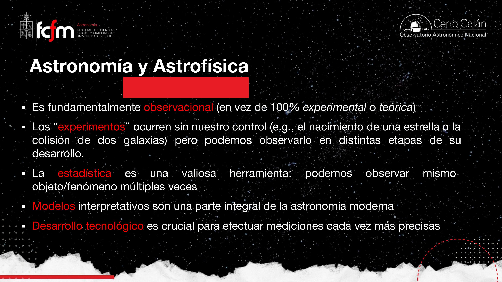
Es el mismo problema que diagnosticar una planta industrial a la que no se puede entrar: solo hay sensores remotos (telescopios), el proceso no se puede pausar ni repetir, y la única salida es acumular datos de muchas unidades similares (estadística de poblaciones), ajustar modelos (identificación de sistemas) y mejorar los sensores. La frase "observar el mismo fenómeno en distintas etapas" es clave: no vemos una estrella nacer y morir (viven millones a miles de millones de años), pero vemos muchas estrellas en distintos puntos de su vida — como inferir el ciclo de vida humano fotografiando una ciudad un solo día.
Antes de la respuesta formal, la clase muestra una nube de palabras con la opinión popular a la pregunta "¿cómo aprendemos sobre el Universo?": domina abrumadoramente "observando" — y la intuición popular acierta.
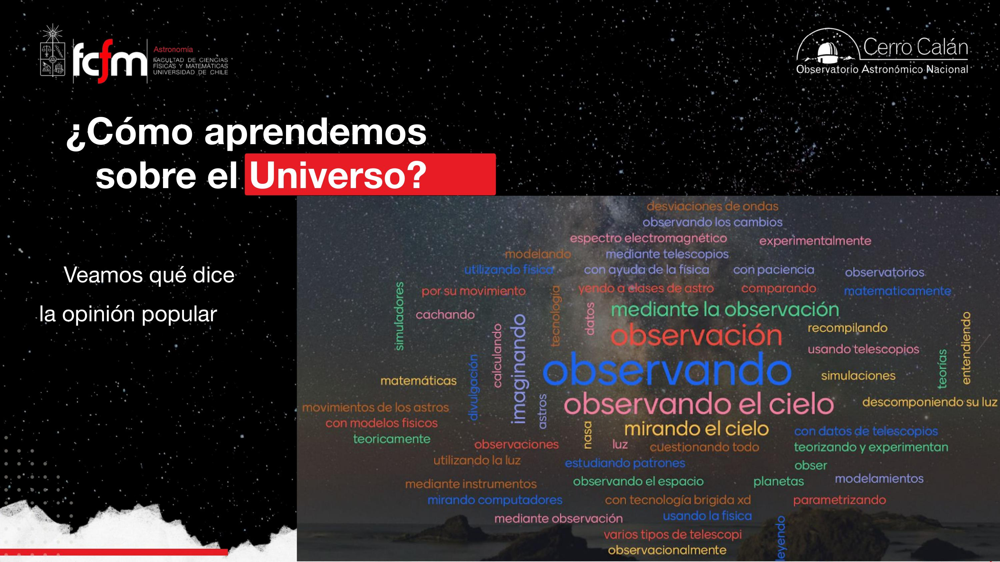
La luz: el mensajero principal
Del arcoíris del prisma al espectro electromagnético completo.
Las observaciones astronómicas se basan sobre todo en la luz. El punto de partida es la parte visible del espectro: la luz blanca que un prisma descompone en colores, de ~400 nm (violeta) a ~700 nm (rojo).
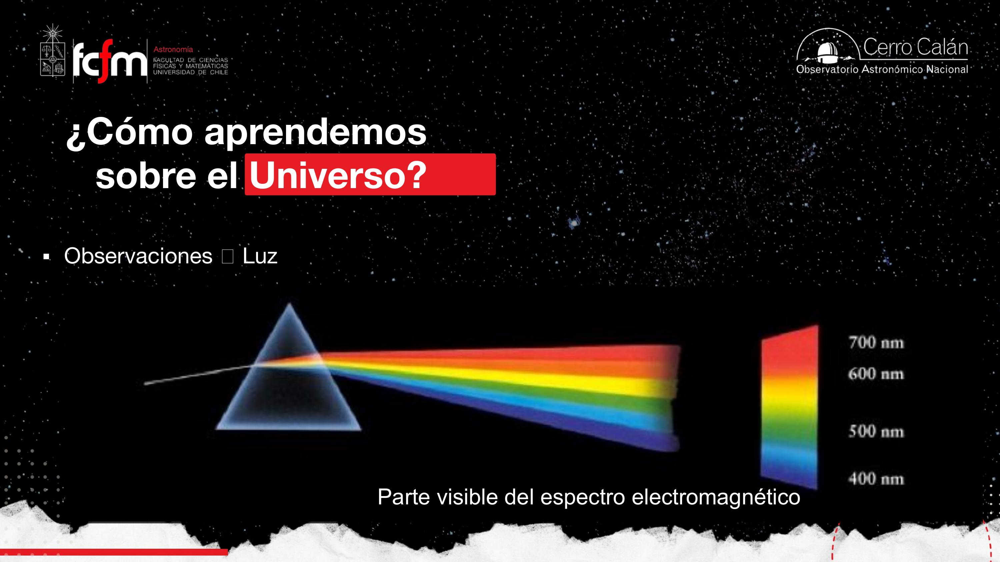
Pero el rango visible es solo una ventana angosta: las observaciones se pueden hacer a lo ancho de todo el espectro electromagnético, desde las ondas de radio (longitudes de onda de metros a kilómetros) hasta los rayos gamma (menores que un núcleo atómico). La diapositiva 6 resume el mapa completo: tipo de radiación, longitud de onda, frecuencia, si penetra o no la atmósfera terrestre, y la temperatura típica de los objetos que emiten con máxima intensidad en cada banda.
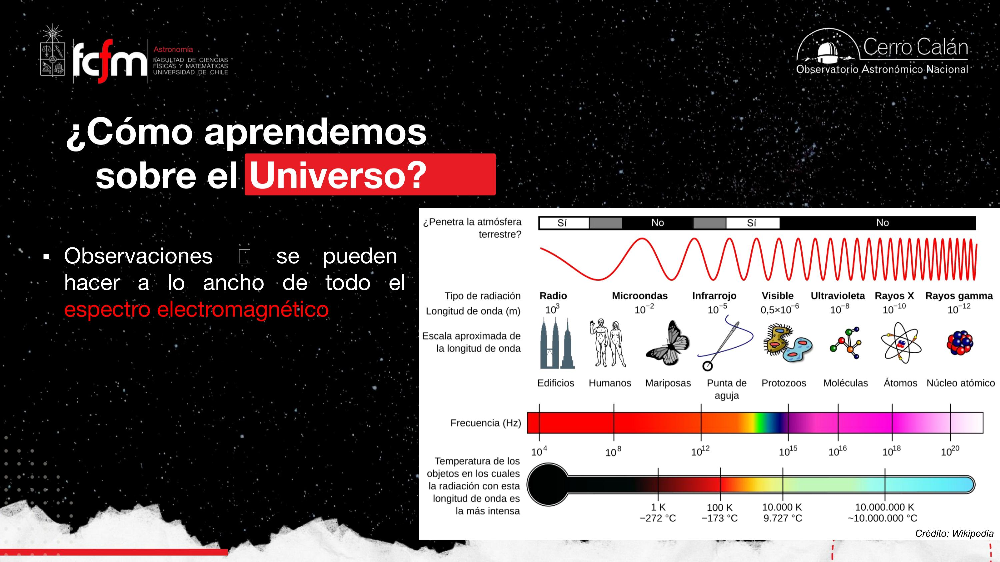
Toda la información viaja codificada en ondas electromagnéticas caracterizadas por su longitud de onda \(\lambda\) o su frecuencia \(\nu\), ligadas por \(\lambda \nu = c\). Y cada fotón transporta una energía \(E = h\nu\): a menor longitud de onda, mayor energía. Por eso el eje del espectro es también un eje de violencia física: la radio la emiten procesos fríos y tranquilos; los rayos gamma, los eventos más energéticos del cosmos. La fila de temperaturas de la diapositiva (1 K → 10 000 000 K) es exactamente esa correspondencia.
El espectro electromagnético es el ancho de banda total del canal Universo→Tierra, y la atmósfera es un filtro pasabanda que solo deja pasar ciertas ventanas (visible, radio, rendijas del IR). Observar "en todas las bandas" es muestrear el mismo sistema con sensores de distinta banda de frecuencia: cada uno ve procesos físicos distintos. De ahí la carrera tecnológica por poner detectores fuera del filtro — es decir, en órbita.
Los otros mensajeros del Universo
Partículas, muestras directas y ondas gravitacionales: la astronomía multi-mensajero.
Además de la luz, la clase enumera tres "mensajeros" adicionales que traen información del Universo:
- Partículas — el ejemplo de la clase son los neutrinos, detectados por observatorios como IceCube (un kilómetro cúbico de hielo antártico instrumentado con fotodetectores). Los neutrinos casi no interactúan con la materia: escapan directamente del interior de las estrellas, de donde la luz no puede salir.
- Muestras directas — el ejemplo son los asteroides (y meteoritos): pedazos físicos del Sistema Solar que podemos literalmente tener en la mano y analizar en laboratorio.
- Ondas gravitacionales — detectadas por LIGO: arrugas del espacio-tiempo producidas por eventos como la fusión de dos agujeros negros.
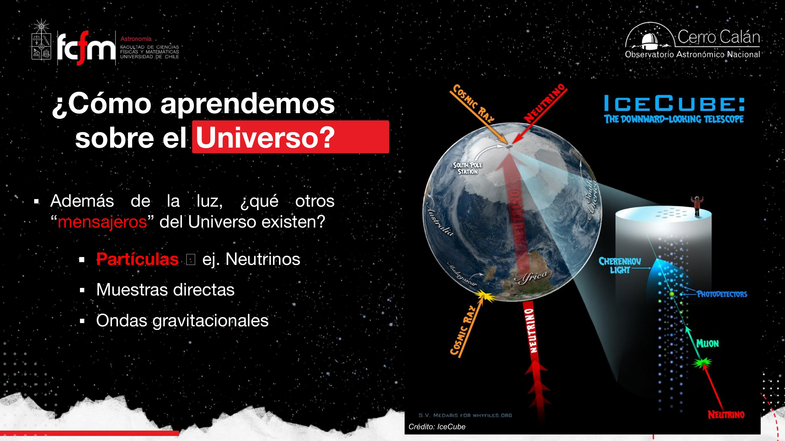
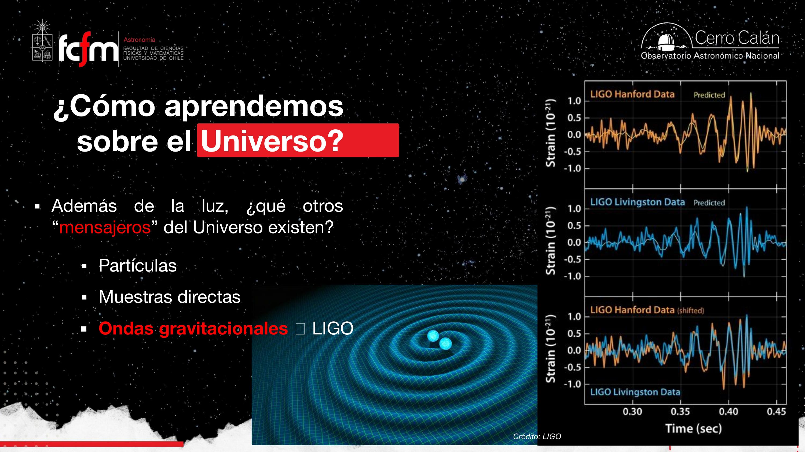
Cada mensajero es un canal de medición con física de sensado distinta: la luz es abundante pero se absorbe y dispersa (pierde información del interior de las fuentes); los neutrinos atraviesan todo (señal limpia del núcleo, pero tasa de detección bajísima: relación señal/ruido pobre); las muestras directas permiten análisis destructivo en laboratorio (máxima precisión, mínima cobertura); las ondas gravitacionales no interactúan casi con la materia (canal sin distorsión, pero requiere detectar desplazamientos de 10⁻²¹ en fracción relativa). La astronomía "multi-mensajero" es fusión de sensores: combinar canales con errores independientes.
De describir a medir
El salto del análisis descriptivo al análisis cuantitativo, con Galileo como ejemplo.
El último elemento del método: la astronomía progresa cuando pasa del análisis descriptivo (lo que vemos) al análisis cuantitativo (medición). El ejemplo histórico de la clase es Galileo en 1610: sus dibujos nocturnos de las "estrellitas" junto a Júpiter — puro registro descriptivo — le permitieron descubrir, siguiendo sus posiciones noche a noche, que eran lunas orbitando Júpiter. El ejemplo moderno es un mapa de albedo (reflectividad) de una de esas mismas lunas: ya no "qué se ve", sino un campo escalar medido sobre la superficie.
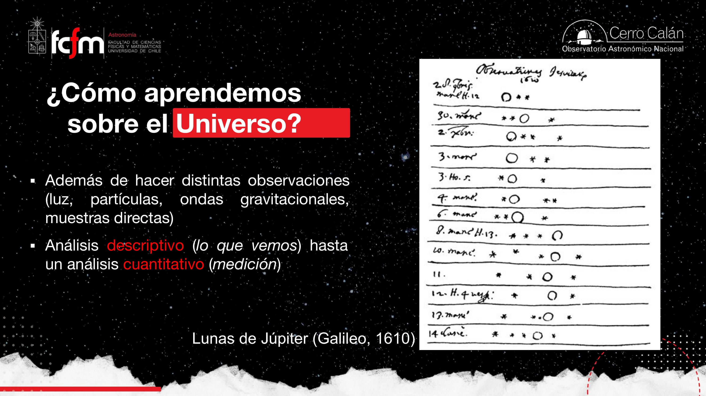
Es la transición de inspección visual a instrumentación: del "la máquina suena raro" al espectro de vibraciones con acelerómetro. El mapa de albedo de la luna de Júpiter (diapositiva 12, Harcke 2005) es literalmente una campaña de caracterización: barrer la superficie con un sensor calibrado y producir un mapa cuantitativo con incertidumbres. Todo el curso operará en este modo: cada afirmación sobre las estrellas colgará de una medición.
Potencias de 10, notación científica y logaritmos
El idioma numérico obligatorio cuando las cantidades abarcan 40 órdenes de magnitud.
Las cantidades astronómicas van desde la masa del electrón (~10⁻³⁰ kg) hasta la masa de una galaxia (~10⁴² kg). Escribir esos números con todos sus ceros es inviable; de ahí que la clase dedique un bloque completo a las potencias de 10 y la notación científica, con la escalera de prefijos del SI: de yocto (10⁻²⁴) a Yotta (10²⁴).
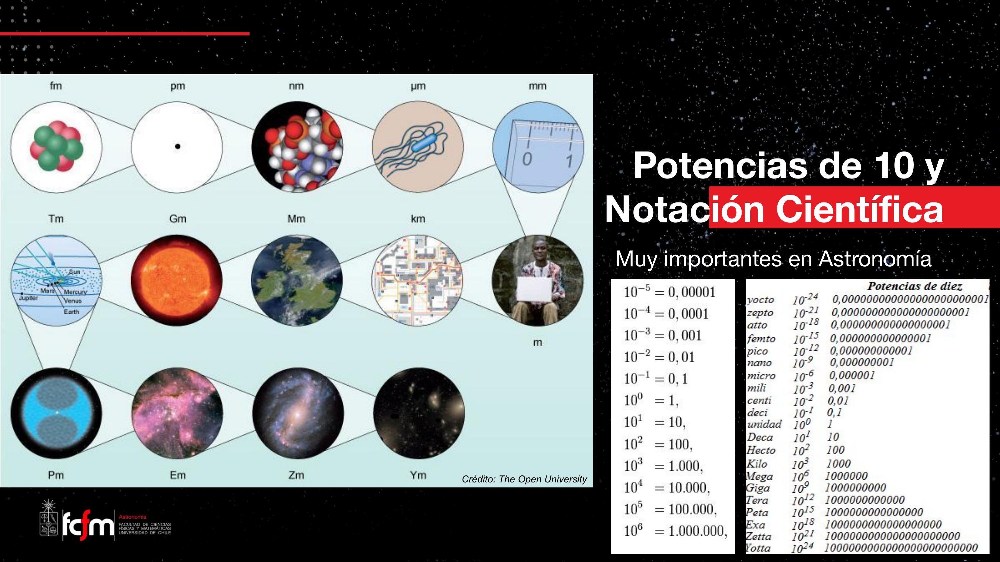
Las reglas operativas
La clase repasa las tres operaciones con potencias de 10 y la definición y propiedades del logaritmo — las herramientas de cálculo mental del astrónomo:
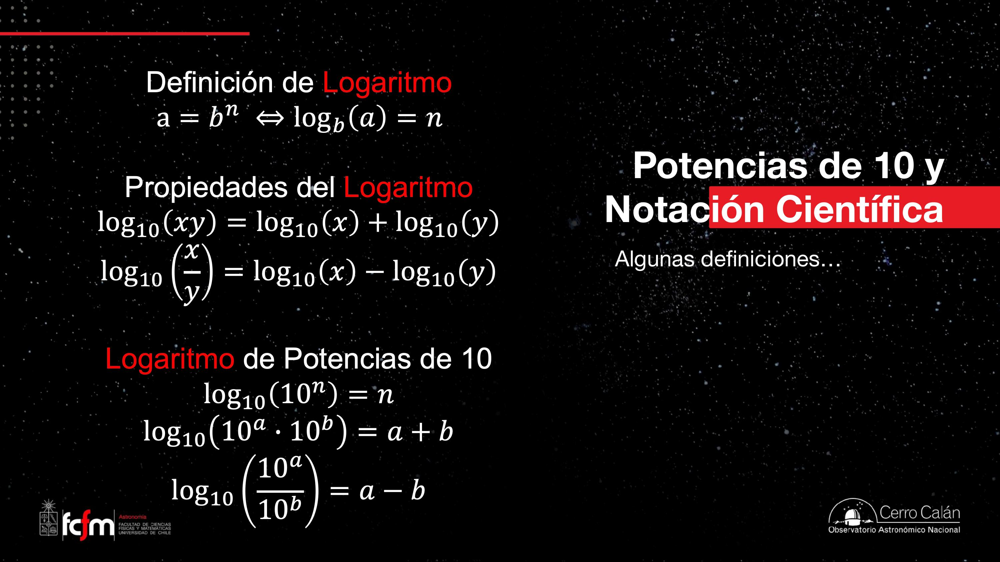
Es el mismo motivo por el que existen los decibeles: cuando una variable cubre muchos órdenes de magnitud (potencia de señal, ganancia, presión sonora), lo natural es trabajar con su logaritmo. Los diagramas de Bode son gráficos log-log por la misma razón por la que lo serán los diagramas del curso de estrellas. Y la aritmética de exponentes es idéntica a sumar ganancias en dB a lo largo de una cadena de amplificadores.
¿Por qué estudiar las estrellas?
Tres razones: la vida, los ladrillos del Universo y la evolución química.
Definido el método, la clase presenta la astrofísica de estrellas — el ámbito de la astronomía que abarca el estudio de la física de las estrellas — y justifica el curso con tres razones (diapositiva 17, casi textual):
- Nuestro Sol es una estrella, responsable de la luz, el calor y la energía que recibe la Tierra: la vida en el planeta no podría existir sin esta estrella.
- Las estrellas son los "ladrillos" sobre los que se construye el "edificio" del Universo: entenderlas es la base que sustenta mucho de la astronomía y astrofísica.
- Las estrellas son responsables de la evolución química del Universo: en su interior y durante su "muerte" se fraguan los elementos químicos que, eventualmente, dan origen a la vida en la Tierra — y quizás en otros mundos.
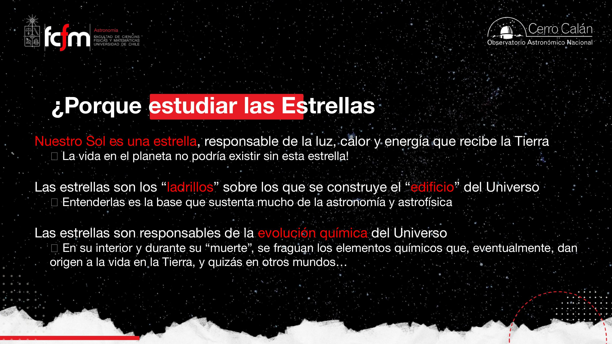
La clase adelanta las preguntas que los tres módulos del curso responderán: ¿de qué están hechas las estrellas?, ¿cómo producen energía?, ¿por cuánto tiempo brillan?, ¿cómo cambian (evolucionan) en el tiempo?, ¿viven para siempre o mueren? Este apunte es el punto de partida de ese arco narrativo completo.
Partamos por nuestro Sol
La estrella más cercana, la más fácil de estudiar — y bastante típica.
El curso parte por el Sol por tres razones: es la estrella más cercana (la más fácil de estudiar); para entender las estrellas primero debemos entender el Sol; y es una estrella bastante típica de nuestra Galaxia — lo que aprendamos de él generaliza bien.
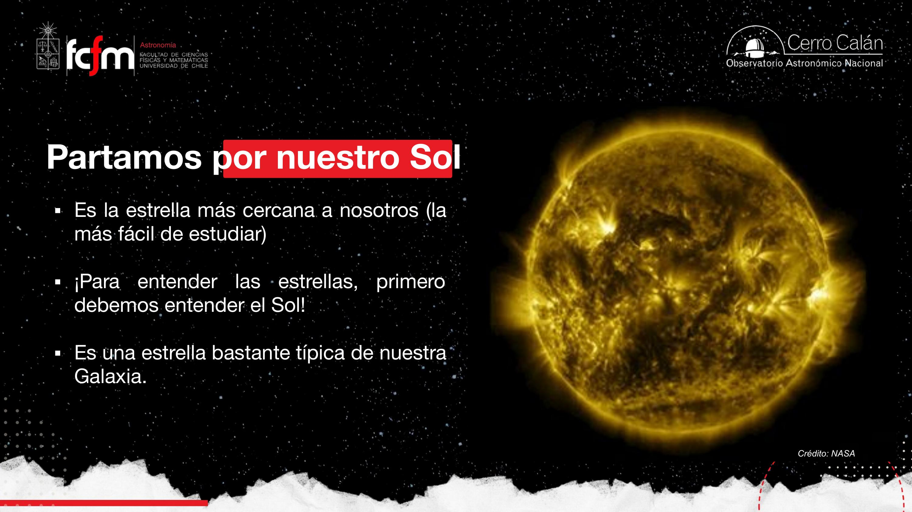
¿Y cómo se estudia? La clase distingue dos frentes, cada uno con sus técnicas:
- Características superficiales: estudiando su luz mediante espectroscopía (descomponer la luz en longitudes de onda) y fotometría (medir brillos), y estudiando las partículas del viento solar.
- Características de su interior: mediante helio-sismología (las oscilaciones del Sol como ondas sísmicas que revelan su estructura interna) y detectando neutrinos (que escapan directo del núcleo).
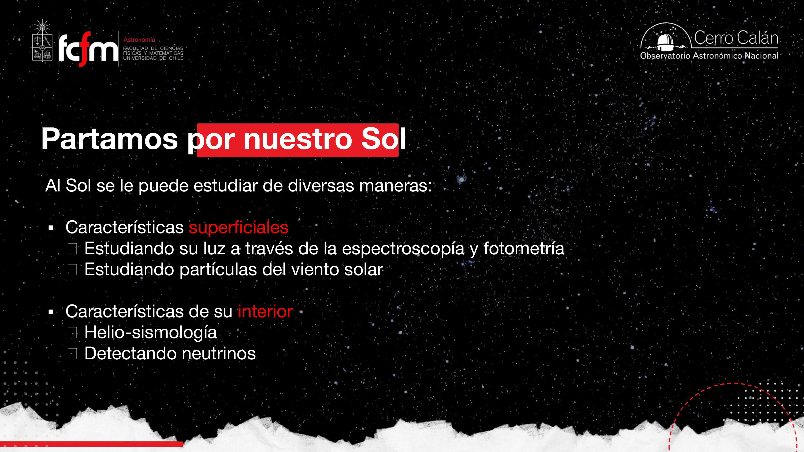
La helio-sismología es ensayo no destructivo por ultrasonido a escala estelar: de los modos de oscilación (frecuencias propias) se invierte la estructura interna, exactamente como el análisis modal de una estructura revela rigideces y masas internas. Y los neutrinos son el sensor embebido en el núcleo del reactor: la única señal que sale sin procesar desde la zona de reacción.
El Sol en números: propiedades básicas
Distancia, tamaño, masa, densidad, composición, temperatura y luminosidad — todos superlativos, salvo uno.
El corazón de la clase es una lista de diez propiedades del Sol, casi todas encabezadas por la palabra "enorme". Recorrámoslas con sus números.
Enorme distancia: 149,6 × 10⁶ km
El Sol está a 149,6 millones de kilómetros — unos 150 000 000 km, la distancia que define la Unidad Astronómica. La luz tarda ~8,3 minutos en recorrerla (inferencia propia: \(d/c\)). Y aún así, es la estrella cercana.
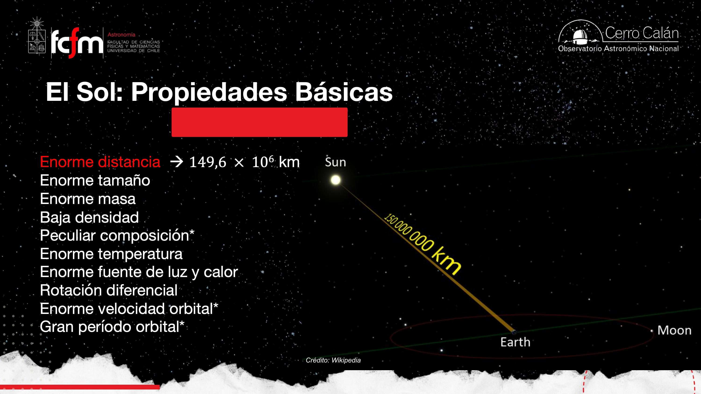
Enorme tamaño: R☉ = 696 × 10³ km ≈ 109 R⊕
El radio solar es de 696 000 km: unas 109 veces el radio de la Tierra. En la imagen comparativa de la clase, la Tierra es un punto ("usted está aquí") junto a los planetas gigantes, y el Sol apenas cabe por el borde.
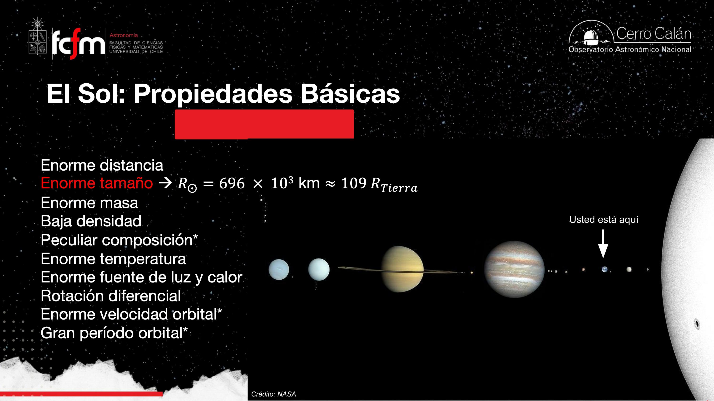
Enorme masa: M☉ = 1,989 × 10³⁰ kg
La masa del Sol es 1,989 × 10³⁰ kg — y concentra el 99,86 % de la masa de todo el Sistema Solar. El gráfico de torta de la clase es elocuente: el Sol es el disco completo; Júpiter y Saturno, una rendija apenas visible.
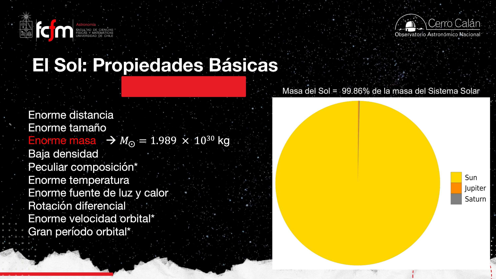
Baja densidad: ρ☉ = 1,41 g/cm³
La única propiedad no superlativa: la densidad media del Sol es 1,41 g/cm³ — apenas 1,4 veces la del agua (1 g/cm³) y muy por debajo de la Tierra (5,5 g/cm³). Saturno, con 0,7 g/cm³, flotaría en una piscina suficientemente grande. ¿Cómo puede algo tan masivo ser tan poco denso? Porque el Sol no es sólido: es una bola de gas (plasma) gigantesca — la masa enorme se reparte en un volumen aún más enorme.
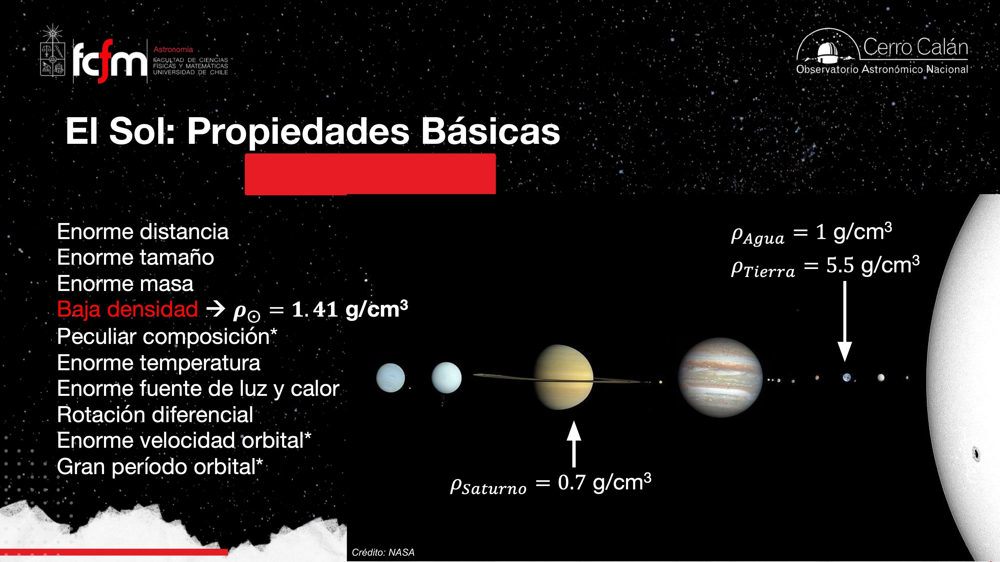
Con los números de la clase: \(V = \tfrac{4}{3}\pi R^3 = \tfrac{4}{3}\pi (6{,}96\times10^{10}\,\text{cm})^3 \approx 1{,}4\times10^{33}\,\text{cm}^3\), y entonces \(\rho = M/V \approx 1{,}989\times10^{33}\,\text{g} \,/\, 1{,}4\times10^{33}\,\text{cm}^3 \approx 1{,}4\ \text{g/cm}^3\). ✓ Los tres números de las diapositivas son mutuamente consistentes — y acabas de usar las reglas de exponentes de la sección 5.
Peculiar composición: 71 % H, 27 % He
El Sol es ~71 % hidrógeno, ~27 % helio y ~2 % elementos pesados (en masa). Comparado con la Tierra — dominada por hierro (31,9 %), oxígeno (29,7 %), silicio (16,1 %) y magnesio (15,4 %) — es una composición radicalmente distinta. Pero el asterisco de la diapositiva es importante: la composición del Sol es peculiar comparada con la Tierra, pero normal comparada con otras estrellas — y con el Universo en general. Los raros somos nosotros.
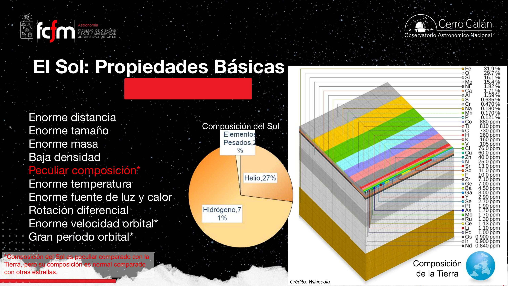
Enorme temperatura: 5527 °C en la superficie… y millones en la corona
La fotósfera — la "superficie" visible del Sol — está a 5527 °C (unos 5800 K). Pero la temperatura no es una sola: el mosaico de imágenes del instrumento AIA muestra el Sol en distintas longitudes de onda, cada una sensible a plasma de distinta temperatura: 6000 K en la fotósfera, 50 000 K en la cromósfera, y de 1 a 10 millones de Kelvin en la corona y las regiones de fulguraciones.
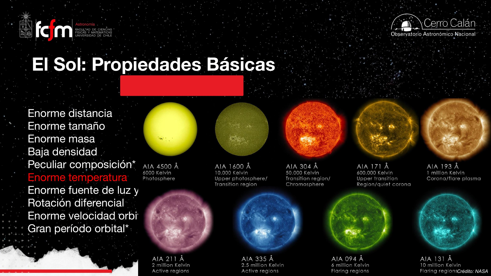
Enorme fuente de luz y calor: L☉ = 3,9 × 10²⁶ W
La luminosidad es la energía radiada por segundo: para el Sol, 3,9 × 10²⁶ watts. La clase ancla la unidad con ampolletas de uso diario (incandescente 30 W, LED 3 W) y con una comparación memorable: la energía radiada por el Sol equivale a aproximadamente 10 000 millones de lavadoras por cada ser humano, funcionando todo el tiempo.
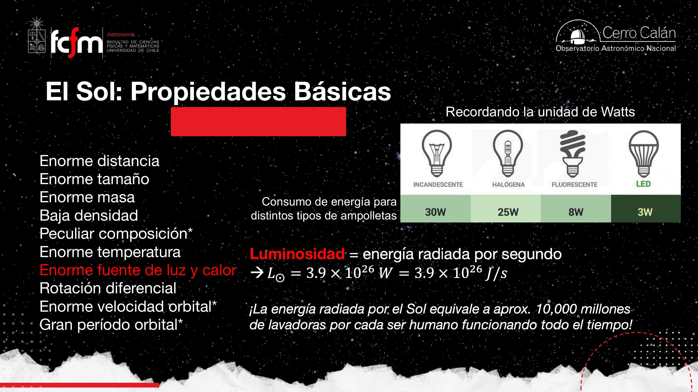
El Sol en movimiento
Rotación diferencial sobre sí mismo; 220 km/s alrededor de la Galaxia.
Rotación diferencial
El Sol rota, pero no como un cuerpo rígido: el ecuador completa una vuelta en ~25 días, mientras que las regiones polares tardan ~35 días. Esta rotación diferencial solo es posible porque el Sol es un fluido (plasma), no un sólido — y es un ingrediente clave del magnetismo solar que veremos en las próximas clases.
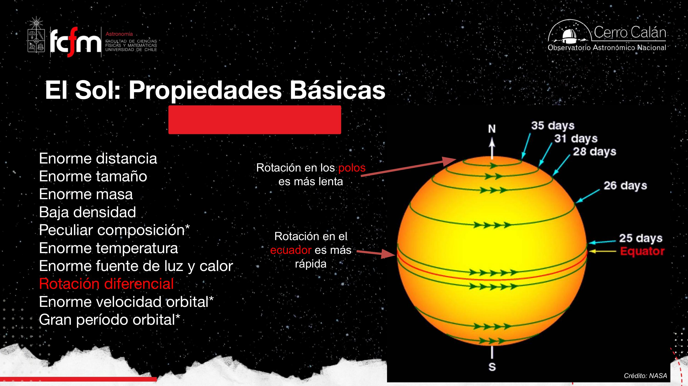
Órbita galáctica: 220 km/s, 220 millones de años
El Sol tampoco está quieto en la Galaxia: orbita el centro de la Vía Láctea a una enorme velocidad orbital de 220 km/s (casi 800 000 km/h), y aun así — por las distancias involucradas — tarda un gran período orbital de ~220 millones de años en completar una vuelta. Desde que se formó, el Sol ha dado apenas unas 20 vueltas a la Galaxia.
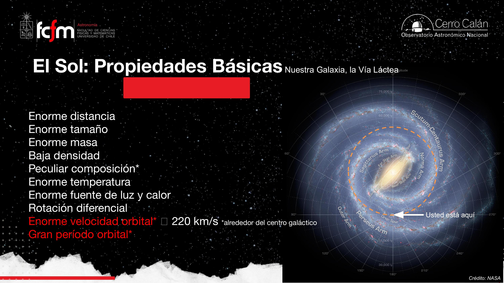
¿Son consistentes 220 km/s y 220 millones de años? El perímetro orbital sería \(P \cdot v = (220\times10^6 \cdot 3{,}15\times10^7\ \text{s}) \cdot 220\ \text{km/s} \approx 1{,}5\times10^{18}\ \text{km}\), lo que da un radio \(r = \tfrac{1{,}5\times10^{18}}{2\pi} \approx 2{,}4\times10^{17}\ \text{km} \approx 26\,000\) años luz — justo la distancia aceptada del Sol al centro galáctico. Otra vez: tres números, un chequeo dimensional, cero calculadora.
La clase cierra con las preguntas que abren la siguiente: ¿cómo produce el Sol tan gran luminosidad?, ¿cuál es la fuente de energía del Sol y las estrellas?, ¿cómo se estructura el Sol?, ¿qué fuerzas lo equilibran?, ¿cómo se transporta la energía del interior al exterior? — el programa de las clases 2 y 3 (El Sol, partes 1 y 2).
Conceptos clave
Tabla de repaso rápido.
| Concepto | Qué es / valor | Por qué importa |
|---|---|---|
| Astronomía observacional | Ciencia basada en observar "experimentos" que no controlamos | Define el método: observación + estadística + modelos + tecnología |
| Espectro electromagnético | Radio → microondas → IR → visible → UV → rayos X → gamma | La luz es el mensajero principal; cada banda ve física distinta |
| Ventanas atmosféricas | Solo visible, radio y parte del IR llegan al suelo | El resto del espectro exige telescopios espaciales |
| Mensajeros del Universo | Luz + partículas (neutrinos), muestras directas (asteroides), ondas gravitacionales (LIGO) | Astronomía multi-mensajero: canales con información complementaria |
| Descriptivo → cuantitativo | De "lo que vemos" a la medición (Galileo 1610 → mapa de albedo) | El progreso de la astronomía es el paso de describir a medir |
| Notación científica | 10ᵃ·10ᵇ = 10ᵃ⁺ᵇ; 10ᵃ/10ᵇ = 10ᵃ⁻ᵇ; (10ᵃ)ᵇ = 10ᵃᵇ | Idioma obligatorio: las cantidades cubren decenas de órdenes de magnitud |
| Logaritmo | a = bⁿ ⇔ log_b(a) = n; log(xy) = log x + log y | El log de un número es su orden de magnitud; base de las magnitudes estelares |
| Por qué las estrellas | Vida (el Sol), "ladrillos" del Universo, evolución química | Motivación del curso completo |
| Cómo estudiar el Sol | Superficie: espectroscopía, fotometría, viento solar. Interior: helio-sismología, neutrinos | La luz no sale del interior: hacen falta canales indirectos |
| Distancia Tierra–Sol | 149,6 × 10⁶ km (1 Unidad Astronómica) | La regla de medir del Sistema Solar |
| Radio solar | R☉ = 696 × 10³ km ≈ 109 RTierra | Escala de tamaño estelar |
| Masa solar | M☉ = 1,989 × 10³⁰ kg = 99,86 % del Sistema Solar | Unidad de masa de la astrofísica; el Sistema Solar es el Sol |
| Densidad media solar | ρ☉ = 1,41 g/cm³ (agua: 1; Tierra: 5,5; Saturno: 0,7) | El Sol es gas (plasma), no sólido; consistente con M y R |
| Composición solar | ~71 % H, ~27 % He, ~2 % pesados | Peculiar vs. la Tierra, normal vs. otras estrellas |
| Temperatura | Fotósfera: 5527 °C (~5800 K); cromósfera 5×10⁴ K; corona 10⁶–10⁷ K | Cada banda del espectro "ve" plasma de temperatura distinta |
| Luminosidad | L☉ = 3,9 × 10²⁶ W (energía radiada por segundo) | La potencia del Sol; explicarla es el objetivo del Módulo I |
| Rotación diferencial | Ecuador: ~25 días; polos: ~35 días | Posible porque es fluido; motor del magnetismo solar |
| Órbita galáctica | v ≈ 220 km/s; período ≈ 220 millones de años | El Sol también se mueve: nada está quieto en el Universo |
Exámenes de práctica
10 exámenes de 5 preguntas (3 de alternativas autocorregibles + 2 de respuesta escrita).
- Examen 01La astronomía como ciencia
- Examen 02El espectro electromagnético
- Examen 03Los mensajeros del Universo
- Examen 04Potencias de 10 y notación científica
- Examen 05Logaritmos y órdenes de magnitud
- Examen 06Por qué estudiar las estrellas
- Examen 07Cómo se estudia el Sol
- Examen 08El Sol en números I
- Examen 09El Sol en números II
- Examen 10Integrador